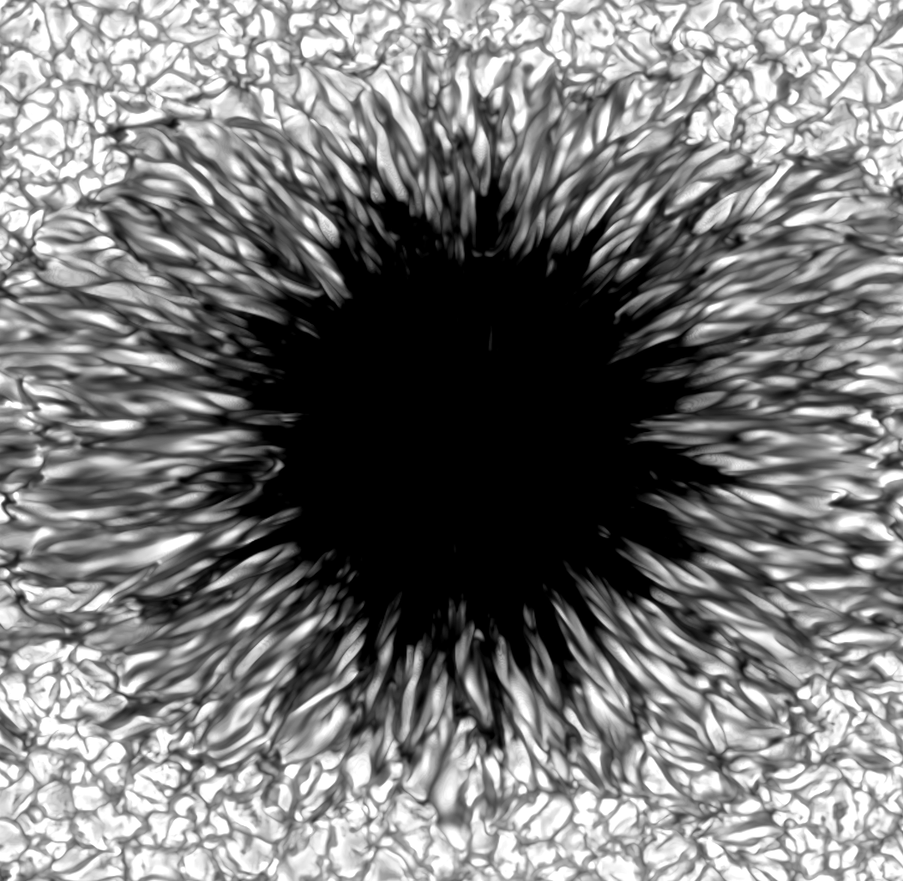
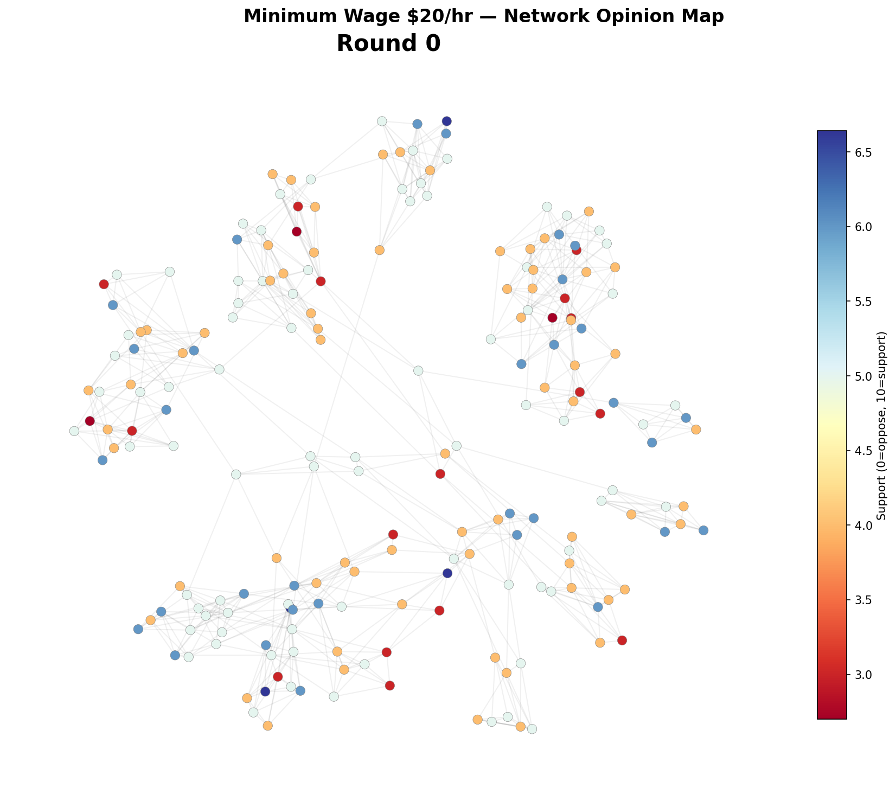
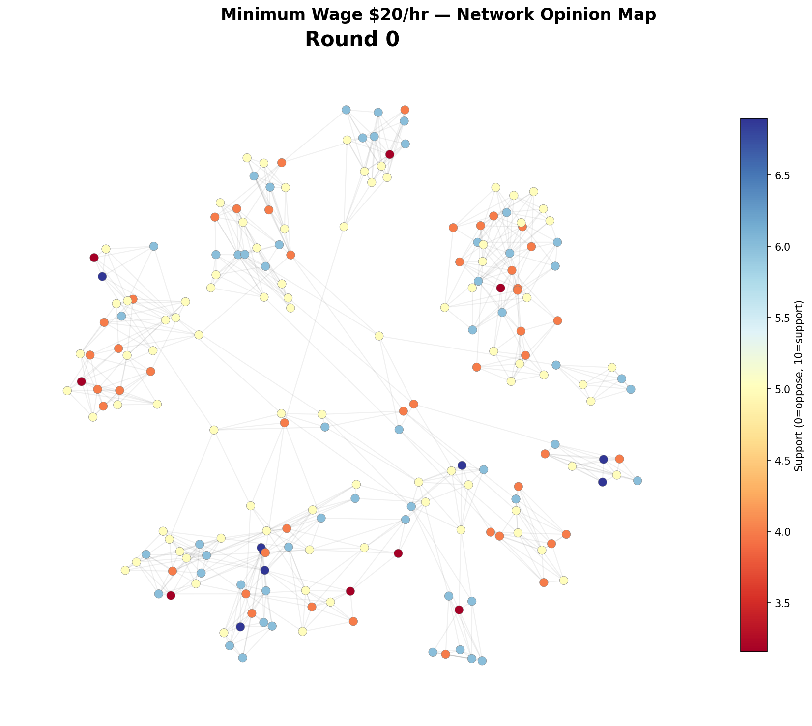
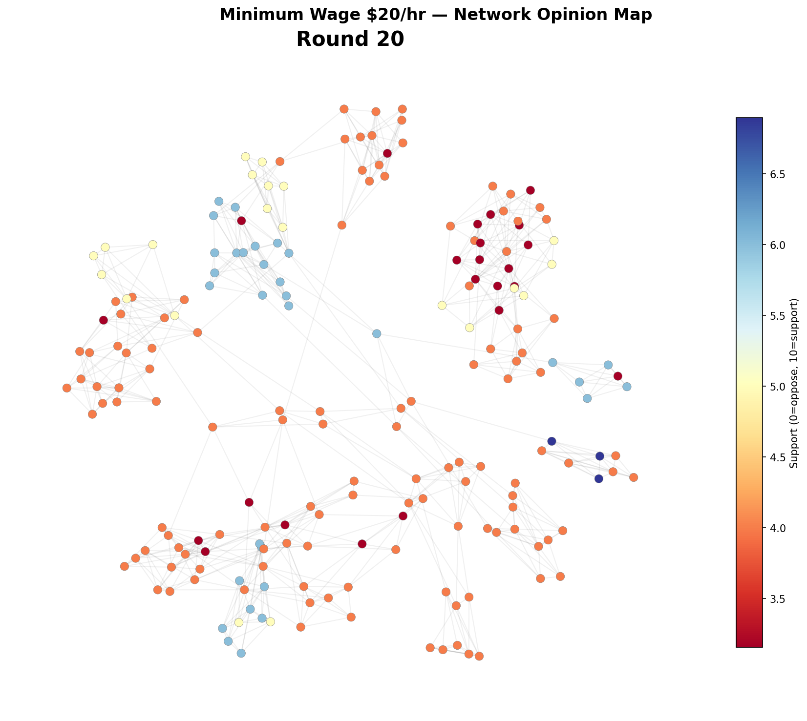
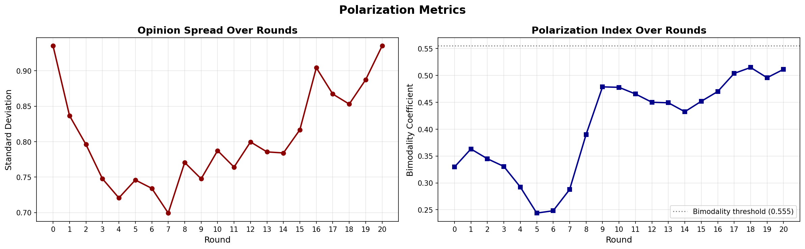
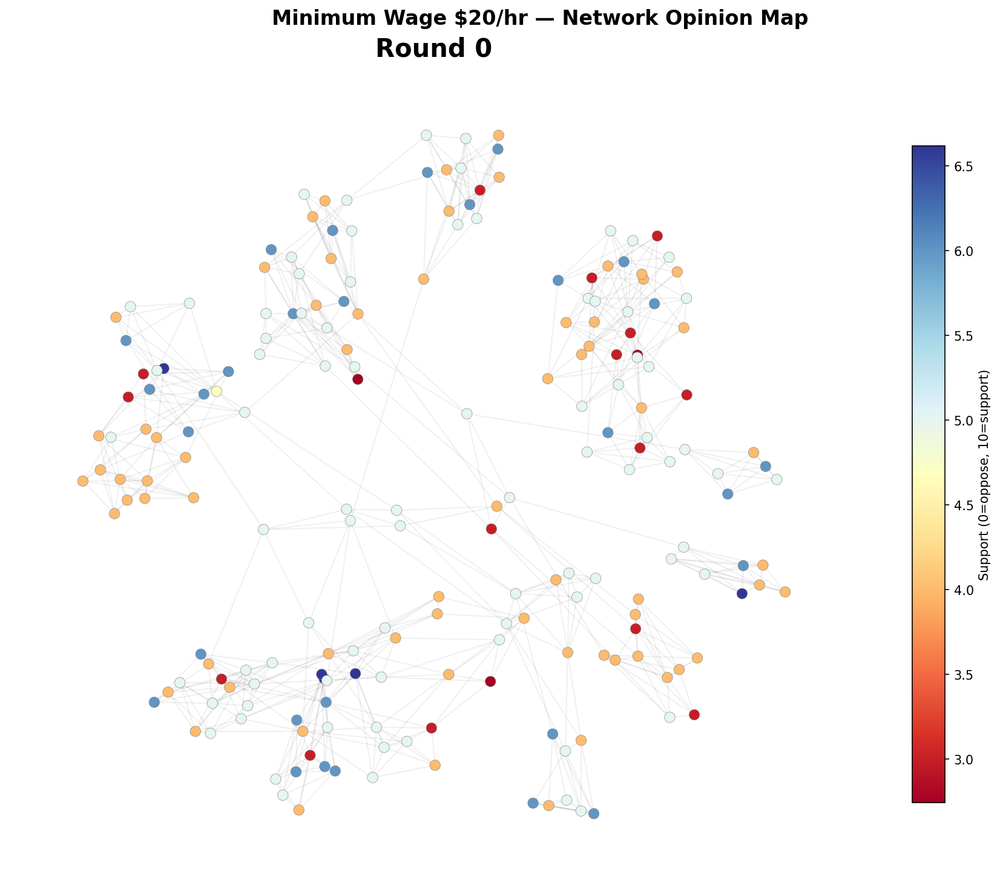
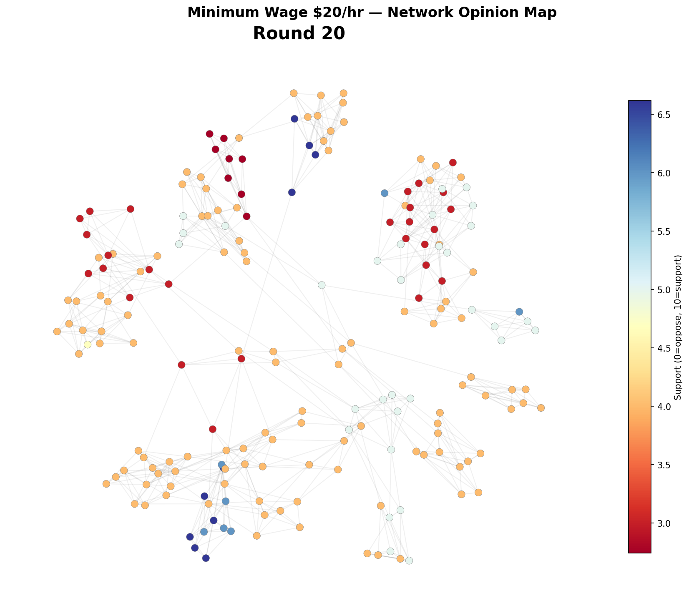
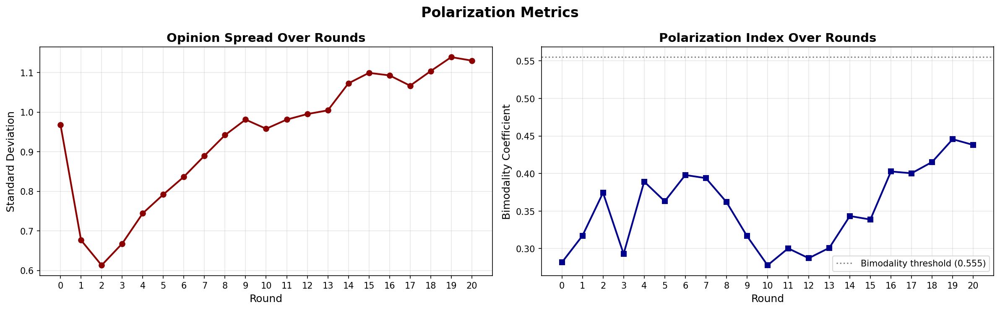

1 /
Simulations of Reality
Physics and AI
Mayukh Panja
Differential equations
In physics, we describe the world by writing down rules for how
quantities change with space and time.
The notation $\dfrac{dx}{dt}$ means the rate of change of $x$ with respect to time —
if $x$ is position, then $\dfrac{dx}{dt}$ is velocity, and $\dfrac{d^2x}{dt^2}$ is acceleration.
A differential equation is a relationship between a variable and its rates of change.
If we know the rule, we can solve for the full behaviour of the system — past and future.
Example: a pendulum
Let $x$ be the displacement of the bob from the centre.
From Newton's second law, $F = ma$.
The acceleration of the bob is $\dfrac{d^2x}{dt^2}$, and the restoring force pulls it
back towards the centre, proportional to $x$.
This gives us a differential equation:
$\displaystyle \textcolor{#6db3f2}{\frac{d^2x}{dt^2}} + \textcolor{#6AA84F}{\omega^2 x} = 0$
acceleration
restoring force
Solution: simple harmonic motion
Solving the equation gives $x(t) = A\cos(\omega t)$. The bob oscillates back and forth,
and $x(t)$ is its displacement from the centre over time:
Adding a term: air resistance
A real pendulum loses energy to friction. The drag force opposes the velocity $\dfrac{dx}{dt}$,
so we add a damping term:
$\displaystyle \textcolor{#6db3f2}{\frac{d^2x}{dt^2}} + \textcolor{#E69138}{\gamma\frac{dx}{dt}} + \textcolor{#6AA84F}{\omega^2 x} = 0$
acceleration
damping
restoring force
Fitting the coefficient to data
The coefficient $\textcolor{#E69138}{\gamma}$ controls how fast energy is lost.
We vary it until the simulation matches the measured data.
Simulation (varying $\textcolor{#E69138}{\gamma}$)
γ = 0.00
Solving equations numerically
The damped pendulum can be solved analytically — we can write down a formula.
Most equations in physics cannot. Instead, we solve them
numerically.
The idea is to approximate the derivative. We replace the continuous
$\dfrac{dx}{dt}$ with a discrete step:
$\displaystyle \frac{dx}{dt} \;\approx\; \frac{x(t + \Delta t) \;-\; x(t)}{\Delta t}$
This turns the differential equation into an
update rule:
given the current value $x_n$, compute the next value $x_{n+1}$.
Then we iterate — step by step, each point computed from the one before it.
Smaller $\Delta t$ gives a more accurate answer.
Numerical solution built point by point
Partial differential equations
So far, our variable $x$ only changed in time.
In most physical systems, quantities also vary in space.
$\nabla^2$ (nabla-squared, or the Laplacian) is the spatial equivalent of what we saw before —
it is the second derivative, but now in space instead of time.
In one dimension, $\nabla^2 T = \dfrac{\partial^2 T}{\partial x^2}$.
In three dimensions, it acts in all directions:
$\nabla^2 T = \dfrac{\partial^2 T}{\partial x^2} + \dfrac{\partial^2 T}{\partial y^2} + \dfrac{\partial^2 T}{\partial z^2}$.
The diffusion equation uses this to describe how heat spreads:
$\displaystyle \frac{\partial T}{\partial t} = \kappa \,\nabla^2 T$
change in time
second derivative in space — how T curves relative to its neighbours
2D diffusion: a hot spot spreading over time
In 3D, we solve this at every cell in the grid,
at every timestep
The blueprint for simulation
1. Differential equations are rules for how quantities
change in space and time.
2. Adding terms to the equation adds realism.
Tuning the coefficients to match observations reveals information
about the world — the terms are the understanding.
3. The recipe: write down rules,
solve them, and compare to observation.
If it matches, the model has captured something true.
Simulating a slice of a star
The setup
A star is a sphere of hot plasma, hundreds of thousands of kilometres across.
We cannot simulate the whole thing. Instead, we take a small
rectangular patch at the surface — a few thousand kilometres
on each side, extending a little below and above the visible surface.
Inside this box, we solve the full set of
radiative magnetohydrodynamic equations
on a 3D grid: conservation of mass, momentum, energy,
the induction equation for magnetic fields, and radiative transfer.
The box is small enough to resolve the fine structure,
but the physics inside it is complete.
What are we solving?
$\displaystyle \frac{\partial \rho}{\partial t} + \nabla \cdot (\rho \mathbf{v}) = 0$
Mass
matter is neither created nor destroyed
$\displaystyle \rho \frac{\partial \mathbf{v}}{\partial t} + \rho(\mathbf{v} \cdot \nabla)\mathbf{v} = -\nabla p + \frac{1}{4\pi}(\nabla \times \mathbf{B}) \times \mathbf{B} + \rho \mathbf{g}$
Momentum
pressure, magnetic forces, and gravity accelerate the plasma
$\displaystyle \frac{\partial e}{\partial t} + \nabla \cdot \!\left[\mathbf{v}\!\left(e + p + \frac{|\mathbf{B}|^2}{8\pi}\right) - \frac{\mathbf{B}(\mathbf{v} \cdot \mathbf{B})}{4\pi}\right] = \rho \mathbf{g} \cdot \mathbf{v} + Q_{\text{rad}}$
Energy
tracking heat, including magnetic and radiative contributions
$\displaystyle \frac{\partial \mathbf{B}}{\partial t} = \nabla \times (\mathbf{v} \times \mathbf{B})$
Induction
the flow drags and distorts the magnetic field
$\displaystyle T = T(e, \varrho), \quad p = p(e, \varrho)$
Equation of state
connecting temperature and pressure to density
$\displaystyle \frac{dI_\nu}{d\tau_\nu} = S_\nu - I_\nu$
Radiative transfer
how light propagates through the plasma
$\displaystyle Q_{\text{rad}} = \int_\mu \nabla \cdot \!\left(\int_{4\pi} I_\nu\,\boldsymbol{\mu}\,d\omega\right) d\mu$
Radiative heating / cooling
how radiation heats and cools the gas
What we're trying to reproduce
This is real footage of the solar surface.
The bright cells are granules — columns of hot gas
rising from below. The dark lanes between them are where
cooler gas sinks back down. Each granule is roughly the size of France.
The dark region is a sunspot. Strong magnetic fields
there suppress the convection, so less heat reaches the surface
and it appears dark by contrast.
Can our equations produce something that looks like this?
What emerges from the equations
The simulation produces granulation —
convective cells of rising hot gas surrounded by lanes of cool sinking gas,
matching the pattern seen on the real sun.
Where the magnetic field is strong, it suppresses the convection
and a sunspot forms: a dark region with
radial filaments streaming outward in the penumbra.
The magnetic field threads through the entire volume,
concentrating into flux tubes at the intergranular lanes
and funneling down beneath the sunspot.
All of this structure emerged from the equations alone.
Simulation vs observation

MURaM simulation
(Matthias Rempel)
G band observation
(F. Wöger, NSO)
Left: simulation. Right: observation.
The equations produce the granulation pattern,
the penumbral filaments streaming outward from the sunspot,
and the dark umbral core where convection is suppressed.
The match tells us that the physics we encoded — the fluid dynamics,
the magnetic forces, the radiative transfer — is sufficient to
explain what we see on the surface of a star.
What simulations tell us
1. Encode the right rules, and realistic structure emerges.
The simulation was not told what a sunspot looks like —
granulation, penumbral filaments, magnetic flux tubes all arose
as consequences of the physics.
Each term in the equations represents a real process, and their
interplay produces the complexity.
2. When a simulation matches observation, it validates the model.
It means the physics we wrote down is sufficient to explain what we see.
And as we saw with the pendulum, the coefficients themselves
become measurements of the real system.
3. This works because we know the governing rules.
For plasma physics, we have conservation laws, well-understood forces,
measurable boundary conditions.
But what about systems where we have none of this —
no governing equations, no clean ground truth,
no way to validate against controlled observation?
Simulating human behaviour
The challenges
Network-scale simulations are hard.
You cannot run a controlled experiment with thousands of real people
interacting over many rounds. There is no ground truth for how
opinions should propagate through a social network, and you cannot
rerun society with different starting conditions.
Individual behaviour is easier to test.
You can design a clean experiment with a known expected outcome,
isolate a single variable, and check whether the result matches.
The variable space is small: one person, one stimulus, one response.
But even granular data is not trivial.
Real-world behavioural data is noisy, context-dependent,
and expensive to collect at scale. Even well-documented effects
come with messy, conflicting evidence.
The approach: synthetic personas
We build a population of synthetic people. Each person is defined by
a set of demographic attributes — age, gender, income, education,
location, risk tolerance, values orientation — sampled from
real US census-weighted distributions.
From these attributes, a detailed backstory is generated:
who they are, where they live, how they shop, what they worry about.
When we run the simulation, the model only ever sees this backstory.
It never sees the underlying attributes in structured form.
It reads the story and responds as that person.
This means the model cannot simply map
"low income → score 4". It has to engage with a character
who scrutinises price tags, stacks coupons, and worries about delivery mishaps
— and respond accordingly.
Example persona:
"Iftekj is a 49-year-old man living in the suburbs
of Phoenix, Arizona, with a modest household income under $35,000.
He frequents local dollar stores and grocery outlets,
where price tags are always scrutinised.
He meticulously stacks coupons and waits for sales,
relishing the thrill of saving a few extra dollars..."
Underlying attributes:
age: 49, gender: male
education: associate's
income: <35k
risk_tolerance: none
location: suburban
values: price-conscious
The model sees the top box.
It never sees the bottom box.
Sanity check: price charming
Price charming is a well-documented effect:
consumers perceive €19.99 as meaningfully cheaper than €20.00,
despite a one-cent difference.
We use this as a sanity check. The effect is real, well-studied,
and we know what the answer should be. If our synthetic population
cannot reproduce something this basic, there is no point scaling up.
Stainless Steel Water Bottle
Stay hydrated with this durable stainless steel water bottle
designed for everyday use. It holds 750 ml, keeps drinks cold
for up to 12 hours, and fits easily in bags or cup holders.
The leak-proof cap and slim design make it perfect for commuting,
workouts, or school. Built to last and easy to clean, it's a
simple essential you'll use daily.
€20.00
→
€19.99
Everything else is identical.
• Each persona rates purchase likelihood from 0–10
• Double-blind: each API call sees one price only
• Monte Carlo: 5 runs × 5 population sizes (100–500)
Experimental design
Problem: LLMs know about price charming.
If the model knows it is being tested, it could simply produce the expected result.
Solution: Double-blind.
Each API call sees one product at one price. The model does not know
a comparison is happening. It cannot game what it does not know about.
Problem: LLMs have a positive bias.
"Awesome product!" and "Looks great!" are both positive —
in free text, you cannot tell the difference.
Solution: Forced 0–10 score.
The model has to commit to a number. "Awesome" might be an 8.
"Looks great but pricey" might be a 5.
The number forces differentiation within the positive range.
Problem: LLM outputs are stochastic.
The same persona might say 6 one time and 8 the next.
Solution: Multiple independent runs.
Five runs at each population size (100, 200, 300, 400, 500).
This separates reproducible signal from one-off noise.
Results
Directional correctness
In each simulation, does €19.99 score higher than €20.00?
22 / 25
simulations get it right — 88%
| n=100 | 4/5 |
n=200 | 5/5 |
| n=300 | 3/5 |
n=400 | 5/5 |
| n=500 | 5/5 |
| |
Lift from charm pricing
How much higher does €19.99 score, on average?
+2.5%
average rating lift across all 25 simulations
| n=100 | +4.6% |
n=200 | +3.3% |
| n=300 | +0.9% |
n=400 | +1.7% |
| n=500 | +2.0% |
| |
25 Monte Carlo simulations: 5 runs × 5 population sizes (100–500 personas), same personas, only the price changes.
What this tells us
1. LLM personas reproduce a known behavioural effect
at the population level. The charm pricing signal is small but real,
and it emerges without the model being told what to look for.
2. The personas carry individual character.
Between-persona variance is larger than within-persona noise,
which means the demographic backstories are producing
meaningfully different responses — not just random scatter.
3. This was a simple, verifiable test — one product,
one digit, a known answer.
Now we take the same personas, connect them into a social network,
and simulate something harder: opinion dynamics under social influence,
where there is no clean ground truth to check against.
Simulating opinion dynamics on a social network

200 personas, round 0. Colour = support for $20/hr minimum wage.
The network.
We take the same 200 personas and measure how similar any two of them are
across age, income, location, education, and values.
Each persona reaches out to the 5 people most like them —
but the connection isn't necessarily mutual.
If many people consider you similar, you end up with more connections;
if few do, you're more isolated.
Lines in the image are actual connections — information flows along them.
Spatial positions are a visual aid: the layout pulls connected nodes closer,
so clusters of similar people naturally group up.
How the simulation runs:
1. Build the network from demographic similarity. All code, no LLM.
2. Round 0:
Send each persona's backstory and the policy to the LLM.
It reads the persona, adopts their perspective,
and returns an opinion with a score from 0–10.
No social input — everyone decides independently.
3. Rounds 1–20:
For each persona, the code looks up their connections and
collects those neighbours' opinions from the previous round.
It sends the persona's backstory along with what their connections think
to the LLM. The LLM decides: does this person shift, or dig in?
Returns an updated opinion and score.
4. Repeat for all 200 personas, 20 rounds.
Everyone listens to everyone

Round 0
→
In this version, every persona hears all of their neighbours'
opinions with no filtering. After 20 rounds, everyone converges
to roughly the same score.
The network turns a uniform orange —
all the initial diversity of opinion is gone.
This is not how real populations work.
People don't simply average out.
Something is missing from the model.
Adding a rule: bounded confidence
The problem:
In the naive simulation, a strong opponent (score 2) and a strong supporter (score 8)
influence each other equally. In reality, people with very different views
don't engage — they dismiss each other.
The rule:
A persona only listens to neighbours whose score is within a fixed window
of their own. If someone's opinion is too far away, they ignore it.
We run this twice to see how the window size matters:
•
±1: very selective — you only engage with people who nearly agree with you.
•
±2: somewhat open — you'll listen to moderate disagreement, but not extreme views.
Same people. Same network. Same policy. We only change how much disagreement each persona will tolerate.
What emerges
Bounded confidence ±1



SD dips then recovers to starting level.
Diversity is preserved — clusters resist merging.
Bounded confidence ±2



SD grows beyond the starting point.
The wider window allows local consensus to form,
which pushes groups apart — mild polarization emerges.
Closing remarks
• The same principles apply across these simulations.
In each case, we define agents and the rules they follow.
The outcomes are not prescribed — they arise as consequences of the rules.
• By introducing rules one at a time, we can begin to attribute
specific outcomes to specific causes. Magnetic fields and convection
produce sunspots. Bounded confidence preserves opinion diversity.
• However, the domains differ in an important respect:
the availability of observational data.
• In astrophysics, we have decades of resolved imagery,
magnetograms, and spectral measurements.
We can place a simulation beside an observation
and assess whether the two agree.
• In human behaviour, this is far more difficult.
We used price charming precisely because the expected direction
of the effect is well established.
For opinion dynamics, there is no equivalent benchmark.
• The simulation methodology generalises across domains.
The ability to validate becomes progressively harder
as we move from physical systems, where measurement is mature,
to social systems, where ground truth is scarce.